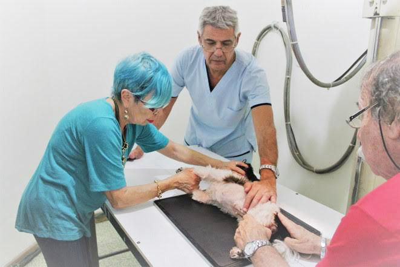

Que es el diagnóstico por imágenes en veterinaria?
Es una serie de herramientas diagnosticas mediante las cuales podemos evaluar
mediante una o varias imágenes, el estado y la morfología de los distintos órganos
internos de las mascotas. Dentro de los procedimientos disponibles en nuestro país contamos,
entre otros con la radiología , ecografía, resonancia magnética, tomografía computada y medicina nuclear.
Todos estos procedimientos son no invasivos y no causan ningún dolor físico a los animales.